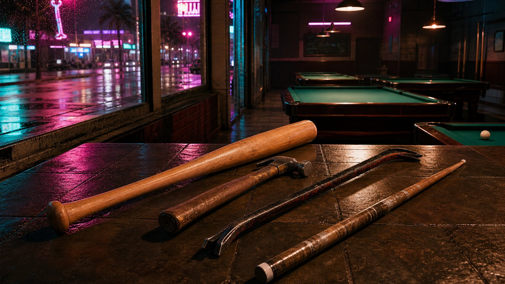

Blocage & contre
Des reviews rapportent des possibilités de blocage et de riposte au corps à corps. Le timing précis, les différences entre personnages et l’effet des améliorations sont à vérifier directement dans le jeu.

MÊLÉE · AVIS DE REVIEWERS & OBJETS À VÉRIFIER
Les reviews du 18 novembre mentionnent blocage et contres, mais ne s’accordent pas toutes sur la profondeur du système. Une fiche pratique, sans inventaire spéculatif.
Les critiques du 18 novembre ne sont pas unanimes sur la profondeur de la mêlée. Certaines décrivent des blocages et contres; au moins une review juge le système plutôt simple. On peut donc parler d’une boucle de combat rapproché observée par la presse, pas d’un système complexe universellement validé ni d’une liste finale d’armes.
Des reviews rapportent des possibilités de blocage et de riposte au corps à corps. Le timing précis, les différences entre personnages et l’effet des améliorations sont à vérifier directement dans le jeu.
Battes, outils et objets improvisés apparaissent dans des listes de fans et des analyses visuelles. Sans nom lu dans une interface Rockstar ou vérification en jeu, la forme visible ne permet pas d’affirmer une liste complète.
Ces pistes résument des observations de reviewers et des principes prudents; elles ne garantissent pas une stratégie optimale pour chaque mission ou niveau de difficulté.
| Affirmation | Qualification |
|---|---|
| « La mêlée est très technique » | Non établi de façon uniforme : les observations de presse divergent sur sa profondeur. |
| Liste de batte, couteau, pied-de-biche, queue de billard… | Objets fréquemment avancés dans les fils de fans; liste exacte et disponibilité à confirmer. |
| Coups létaux/non létaux par zone | Des previews et reviews évoquent le ciblage différencié par Focus; les détails de règles et les cas précis méritent une vérification en jeu. |
| Dégâts, portée, résistance, animation par arme | Aucun tableau officiel vérifié consulté pour cette fiche; pas de chiffres inventés. |